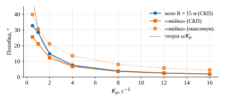
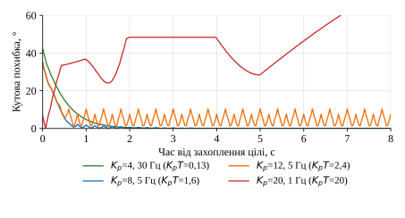
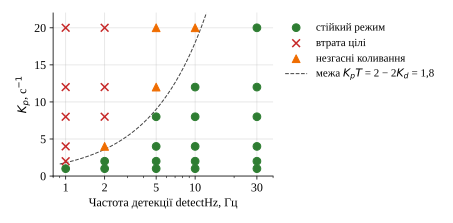
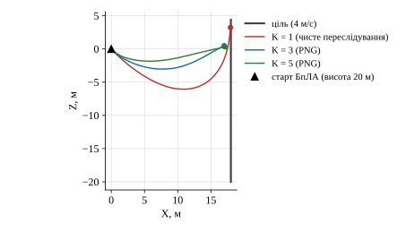

{{ministry}}
{{university}}
{{universityName}}
{{faculty}}
{{reportTitle}}
{{practiceKind}}
студента групи {{group}}
спеціальності {{specialtyCode}}
«{{specialtyName}}»
{{student}}
Керівник практики від
вищого навчального закладу:
{{supervisor}}
Оцінка за практику
{{city}}-{{year}}
Безпілотні літальні апарати (БпЛА) з бортовими камерами широко застосовуються для моніторингу території, охорони периметра та пошуково-рятувальних робіт [1]. Ключовою їх функцією є автоматичне виявлення рухомого наземного об'єкта, утримання його в полі зору та наближення до нього. Налагодження таких алгоритмів на реальних апаратах дороге й ризиковане, тому на ранніх етапах використовують середовища моделювання з повторюваними експериментами і точними даними про стан сцени [2, 3].
Практику проведено у вересні 2026 року; її змістом була розробка додаткового модуля до дипломної роботи. Основою слугувала створена в курсовій роботі [4] система моделювання руху наземної цілі у тривимірному середовищі — веб-симулятор на базі React, Three.js і фізичного рушія Rapier, у якому бракувало спостерігача. Таким спостерігачем став розроблений модуль БпЛА з камерою на двоосьовому підвісі, засобами виявлення і супроводу цілі та наведенням на неї.
Мета практики — закріплення навичок проєктування, реалізації і тестування програмних систем шляхом розробки модуля БпЛА-спостерігача та експериментального дослідження його характеристик.
Завдання практики:
Результатами практики є модуль БпЛА, інтегрований у симулятор, 81 модульний тест, програма обчислювальних експериментів з результатами та цей звіт, оформлений відповідно до ДСТУ 3008:2015 [5]. Як допоміжний інструмент використовувався ШІ-асистент Claude (Anthropic) — для обговорення проєктних рішень, підготовки чернеток коду, тестів і тексту звіту.
На початок практики система являла собою односторінковий веб-застосунок (збірник Vite), у якому тривимірна сцена описується декларативно засобами React Three Fiber над Three.js [12, 13], а фізика твердих тіл розраховується рушієм Rapier, скомпільованим з Rust у WebAssembly [14]. Сцена містить арену 100 × 100 м зі стінами, 30 динамічних ящиків, 15 куль і рампу. Ціль — червоне тверде тіло 1 × 0,5 × 2 м, рух якого моделюється імпульсами сили та моменту; сім параметрів руху змінюються «на льоту» через панель і зберігаються в localStorage за допомогою бібліотеки Zustand.
Аналіз вихідного коду виявив такі обмеження щодо нової задачі: у сцені відсутні спостерігач і будь-які засоби «зору»; автоматизованих тестів і вимірювання покриття не було; смуги стін арени були червоними, що унеможливлює виявлення червоної цілі за кольором; панель параметрів була жорстко прив'язана до сховища параметрів цілі.
Сформульовано такі функціональні вимоги до модуля:
Нефункціональні вимоги: обчислювальна логіка оформлюється як чисті функції без залежності від React і сцени, що не змінюють вхідних даних; покриття цієї логіки тестами не менше 80 %; детекція виконується з фіксованою частотою detectHz, нижчою за частоту рендерингу, як у реальної камери; червоний колір у сцені зарезервовано за ціллю.
В основу архітектури покладено принцип «чисте ядро — тонка оболонка» (рисунок 2.1). Усі обчислення винесено в каталог src/tracking/ у вигляді чистих функцій, що повертають нові об'єкти. React-компоненти й хук лише з'єднують ці функції, передаючи їм дані сцени. Завдяки цьому ядро тестується в Node.js без браузера та WebGL, а алгоритми можна перенести на інший рушій без змін.
Обидва детектори повертають результат в однаковому форматі Detection: ознаку видимості, рамку і центр цілі в нормалізованих координатах пристрою (NDC, діапазон [−1; 1]). Єдиний контракт робить детектори взаємозамінними (шаблон «Стратегія»). Параметри БпЛА зберігаються у сховищі useFlyingObjectParams, а стан супроводу — у useTrackerStore, який оверлей читає через підписку без повторного рендерингу React-дерева.
Логіка модуля виконується в хуку useFlyingObjectTracking у циклі useFrame до рендерингу основної сцени (рисунок 2.2).
Принциповим рішенням є розділення частот: кути підвісу інтегруються щокадру, а детекція і обчислення нової кутової швидкості виконуються лише на тіках частоти detectHz; обрана швидкість утримується до наступного тіку (екстраполятор нульового порядку). Якби закон керування обчислювався щокадру за застарілим результатом детекції, ефективне підсилення зросло б у кілька разів і підвіс почав би коливатися. Зображення камери рендериться у буфер кадру (FBO) 320 × 240 з байтовим форматом пікселів і колірним простором sRGB, тож його можна зчитати в Uint8Array, а значення збігаються з тим, що бачить користувач.
Геометричний детектор (GEOM) використовує точні дані сцени і слугує еталоном. Вісім вершин орієнтованого паралелепіпеда цілі, що лежать перед камерою, проєктуються в NDC матрицями виду та проєкції; рамка визначається крайніми координатами проєкцій і обрізається межами кадру. Затулення перевіряється променями рушія Rapier (castRay) від камери до центру цілі та чотирьох верхніх вершин; ціль видима, якщо незатуленою є хоча б одна з цих п'яти точок.
Піксельний детектор (PIXEL) працює лише із зображенням, як справжня бортова система. Він аналізує вміст FBO, який ще містить попередній кадр, що відтворює затримку реальної камери на один кадр. Піксель належить цілі за умови
де r, g, b — значення каналів у sRGB (0…255). Пороги підібрано так, щоб помаранчеві ящики (g/r ≈ 0,65), бурштинові стіни (g/r ≈ 0,7), сіра земля і блакитні кулі не задовольняли умову (2.1). Якщо червоних пікселів менше чотирьох, ціль вважається невидимою; інакше рамка будується за крайніми рядками і стовпцями.
Поведінку модуля визначає автомат із трьома станами (рисунок 2.3). У стані SEARCH камера сканує простір за азимутом. Перехід у TRACKING відбувається після трьох послідовних тіків із видимою ціллю, що відсіює поодинокі хибні спрацьовування. Зникнення цілі переводить автомат у LOST, де підвіс утримує останній напрямок; якщо ціль не з'являється довше за holdTime, пошук відновлюється.
Положення центру цілі в кадрі (ex, ey) у NDC перераховується в кутову похибку за моделлю камери-обскури [8]:
де φv — вертикальний кут огляду, a = 4/3 — співвідношення сторін кадру. У стані TRACKING на кожному тіку з періодом T = 1/detectHz обчислюється ПД-закон, що є простим випадком візуального сервокерування [11]:
причому швидкості обмежуються значенням ±ωmax. Знак «мінус» для азимута зумовлений конвенцією Three.js, у якій додатний азимут повертає камеру ліворуч. У стані SEARCH азимут змінюється зі швидкістю сканування, а нахил повертається до θscan з коефіцієнтом min(2; 1/T), що виключає перерегулювання за низьких частот детекції. У стані LOST швидкості нульові.
Для нерухомої цілі камера за тік повертається на кут T·uk, тому похибка задовольняє різницеве рівняння
і критерій стійкості Джурі [9] дає умову
За типових Kp = 4 с−1, Kd = 0,1 і 30 Гц маємо KpT ≈ 0,13 за межі 1,8. Для цілі, що рухається з кутовою швидкістю ω, контур з астатизмом першого порядку має усталену похибку
Для наближення до цілі застосовано метод пропорційної навігації (PNG), класичний для задач перехоплення [6] і адаптований для мультикоптерів у роботі [7]. Кути лінії візування (LOS) обчислюються за різницею координат цілі та БпЛА:
Кути напрямку швидкості σ на першому кроці дорівнюють кутам LOS, а далі змінюються пропорційно до повороту лінії візування з навігаційною сталою K; бажана швидкість має модуль V:
За K = 1 швидкість завжди спрямована на ціль (чисте переслідування), за K > 1 БпЛА випереджає маневр цілі. Зміна швидкості за кадр обмежена величиною amaxΔt (amax = 6 м/с2), що імітує інерційність мультикоптера; зниження нижче 0,5 м заборонено; перехоплення фіксується на відстані до 1,2 м. Наведення активне лише в стані TRACKING, в інших станах БпЛА гальмує до зависання. Тіло БпЛА є кінематичним тілом Rapier, керованим швидкістю (setLinvel).
Реалізації передувала специфікація модуля, що визначає мету і межі задачі, архітектуру, потік даних за кадр, таблицю переходів автомата, перелік параметрів, план тестування і вісім критеріїв приймання. Окремо в ній проаналізовано ризики: синхронне зчитування пікселів із графічного процесора, стійкість дискретного контуру, різкий розворот підвісу під час проходження цілі під БпЛА [10]. У початковій постановці БпЛА свідомо нерухомий, щоб супровід можна було налагоджувати незалежно від керування польотом; наближення до цілі реалізовано як окреме розширення (підрозділ 3.5).
Ядро розроблялося за методикою TDD: спочатку тест, що не проходить, потім мінімальна реалізація і рефакторинг. До проєкту додано Vitest із провайдером покриття V8 і поріг покриття 80 % для src/tracking/. Реалізовано контракт Detection, піксельний і геометричний детектори та перевірку затулення. Тести геометричного детектора використовують справжню камеру THREE.PerspectiveCamera, а затулення перевірено на фіктивному світі Rapier у шести сценаріях. Колір смуг стін змінено з червоного на бурштиновий (#ffb300).
Реалізовано автомат станів, годинник тіків детекції і контролер підвісу: функція commandGimbal обирає кутову швидкість на тіку, integrateGimbal застосовує її щокадру. Годинник переносить залишок часу між тіками, тому середня частота детекції точно дорівнює detectHz, а тривалість кадру обмежено 0,1 с. Панель параметрів перероблено на презентаційний компонент, що дозволило показати дві незалежні панелі — для цілі та для БпЛА. Параметри БпЛА наведено в таблиці 3.1.
Таблиця 3.1 – Параметри модуля БпЛА
| Параметр | Типово | Діапазон | Од. | Призначення |
|---|---|---|---|---|
| posX, posZ / height | 0; 0 / 20 | ±45 / 5…45 | м | Початкове положення і висота БпЛА |
| fov | 60 | 20…100 | ° | Вертикальний кут огляду камери (кадр 4:3) |
| gimbalKp / gimbalKd | 4 / 0,1 | 0…20 / 0…2 | с−1 / — | Коефіцієнти ПД-закону Kp, Kd |
| maxRate | 90 | 10…360 | °/с | Обмеження кутової швидкості підвісу |
| holdTime | 1,5 | 0…10 | с | Час утримання напрямку в стані LOST |
| scanRate / scanTilt | 30 / −45 | 5…180 / −85…−5 | °/с, ° | Швидкість сканування і нахил під час пошуку |
| detectHz | 30 | 1…60 | Гц | Частота детекції та керування |
| approachSpeed | 6 | 0…20 | м/с | Швидкість наближення (0 — БпЛА нерухомий) |
| pngGain | 3 | 1…6 | — | Навігаційна стала K |
| detectMode | geometry | geometry / pixel | — | Режим детекції (кнопка у вікні POV) |
Створено компонент FlyingObject.jsx: модель БпЛА складається з корпусу, двох перехрещених балок і чотирьох напівпрозорих гвинтів; камера розташована на 0,3 м нижче корпусу і під час рендерингу POV не бачить його. Вікно POV показується площиною з текстурою FBO у компоненті <Hud> бібліотеки drei, а оверлей — HTML-полотном 320 × 240 з рамкою, прицілом, статусом і кнопкою GEOM / PIXEL; логіку малювання винесено в чисту функцію з тестами.
Під час ручного тестування в браузері виявлено й виправлено дві вади: детекцію і керування переведено на тіки detectHz в обох режимах, а коефіцієнт повернення нахилу в режимі пошуку обмежено величиною 1/T, бо за низьких частот детекції фіксований коефіцієнт 2 с−1 давав перерегулювання. Оновлено також документацію проєкту: опис архітектури і довідник параметрів.
Для наближення до цілі модуль розширено за межі початкової специфікації: тіло БпЛА перетворено на кінематичне тіло Rapier, реалізовано модуль guidanceController.js за формулами (2.7)–(2.9) з дев'ятьма тестами, додано параметри approachSpeed і pngGain. Положення POV-камери тепер береться з поточних координат БпЛА, а зміна положення на панелі чи кнопка скидання телепортують БпЛА в задану точку й обнуляють стан наведення.
Розподіл тестів наведено в таблиці 3.2. Усі 81 тест у 10 файлах проходять приблизно за 0,4 с; покриття ядра становить 96,27 % інструкцій, 95,09 % розгалужень, 100 % функцій і 95,78 % рядків. Компоненти візуалізації перевіряються вручну в браузері за критеріями приймання специфікації.
Таблиця 3.2 – Модульні тести
| Модуль | Тестів | Що перевіряється | Рядки, % |
|---|---|---|---|
| detection.js | 4 | Центр рамки, перерахунок NDC у пікселі | 100 |
| pixelDetector.js | 8 | Рамка червоного блоку, ігнорування схожих кольорів, некоректний буфер | 100 |
| geometryDetector.js | 7 | Ціль перед і позаду камери, обрізання рамки, затулення | 100 |
| occlusion.js | 7 | Сценарії променя на фіктивному світі Rapier | 100 |
| trackerState.js | 9 | Усі переходи автомата, підтвердження, межа holdTime | 100 |
| detectionClock.js | 10 | Накопичення часу, тіки, обмеження Δt | 100 |
| gimbalController.js | 19 | Знаки, обмеження, сканування, утримання, замкнений контур | 100 |
| guidanceController.js | 9 | Кути LOS, закон PNG, мінімальна висота, перехоплення | 89,55 |
| useFlyingObjectParams.js, drawPovOverlay.js | 8 | Обмеження параметрів, скидання; малювання оверлею | — |
| Разом | 81 | Покриття ядра 95,78 % рядків при порозі 80 % | |
Для кількісної оцінки модуля розроблено програму обчислювальних експериментів (каталог docs/practice/experiments/). Вона імпортує ті самі модулі src/tracking/, що й застосунок, і відтворює конвеєр рисунка 2.2 без графіки: 60 кадрів за секунду, детекція і керування на тіках detectHz, наведення щокадру. Використовується геометричний детектор, затулення задається функцією часу, а ціль рухається заданими траєкторіями, що забезпечує повну повторюваність. Якщо не зазначено інше, параметри типові (таблиця 3.1), БпЛА розташований у точці (0; 20; 0) м.
Основна метрика — кутова похибка супроводу ε: кут між оптичною віссю камери і напрямком на центр цілі. Визначаються час захоплення, середньоквадратична (СКП) і максимальна похибки в усталеному режимі (через 1 с після захоплення) та кількість втрат цілі. Піксельний режим потребує WebGL, тому перевірявся в браузері якісно.
Ціль рухається зі швидкістю 8 м/с по колу радіусом 15 м навколо точки під БпЛА (кутова швидкість ω = 30,6 °/с) або прямолінійно зі зміщенням за синусоїдою з амплітудою 6 м і періодом 5 с («змійка»). Результати наведено в таблиці 4.1 і на рисунку 4.1.
Таблиця 4.1 – Похибка супроводу залежно від Kp (detectHz = 30 Гц)
| Kp, с−1 | Коло R = 15 м | «Змійка» | ω/Kp, ° | ||||
|---|---|---|---|---|---|---|---|
| СКП, ° | макс., ° | втрати | СКП, ° | макс., ° | втрати | ||
| 0,5 | 32,7* | 43,1* | 2 | 25,5* | 39,9* | 1 | 61,1 |
| 1 | 28,4 | 30,5 | 0 | 21,1 | 30,6 | 0 | 30,6 |
| 2 | 14,8 | 15,3 | 0 | 12,3 | 21,1 | 0 | 15,3 |
| 4 | 7,56 | 7,64 | 0 | 6,69 | 13,5 | 0 | 7,64 |
| 8 | 3,82 | 3,82 | 0 | 3,54 | 8,00 | 0 | 3,82 |
| 16 | 1,92 | 1,92 | 0 | 1,82 | 4,41 | 0 | 1,91 |
* Лише на інтервалах супроводу; ціль утримувалась 79 % (коло) і 71 % («змійка») часу.

Експеримент підтвердив формулу (2.6): для руху по колу похибка обернено пропорційна Kp і за Kp ≥ 2 с−1 відрізняється від теоретичної в межах 3 %; за Kp = 1 розбіжність зумовлена нелінійністю (2.2) за великих кутів. Коли відставання ω/Kp перевищує половину кута огляду (Kp = 0,5 с−1), ціль виходить за межі кадру. Для «змійки» максимальна похибка приблизно вдвічі більша за СКП через змінну кутову швидкість цілі.
Для перевірки умови (2.5) виконано 30 прогонів тривалістю 20 с із нерухомою ціллю на відстані 15 м для всіх поєднань Kp ∈ {1; 2; 4; 8; 12; 20} с−1 і detectHz ∈ {1; 2; 5; 10; 30} Гц. Режим вважався стійким, якщо в останні 6 с похибка не перевищувала 1° (рисунки 4.2, 4.3).


Класифікація всіх 30 прогонів збіглася з теоретичною межею KpT < 1,8: за KpT = 1,6 процес згасає, а за KpT = 2,0 виникають незгасні коливання (4,6° за 10 Гц і 23° за 2 Гц). За більших KpT амплітуду обмежує насичення maxRate, а за частот 1–2 Гц ціль виходить із кадру. Зниження частоти детекції також подовжує захоплення — від 5,5 с за 30 Гц до 9,0 с за 1 Гц. Типове поєднання (4 с−1, 30 Гц) має більш ніж тринадцятикратний запас стійкості.
Поблизу надиру азимут лінії візування змінюється найшвидше: для руху зі швидкістю v на відстані d від надиру пікова швидкість дорівнює v/d. Специфікація відносила цей випадок до ризиків, тому його перевірено для v = 8 м/с (таблиця 4.2).
Таблиця 4.2 – Супровід цілі під час прольоту поблизу надиру
| d, м | v/d, °/с | ωmax = 45 °/с | ωmax = 90 °/с | ωmax = 180 °/с | |||
|---|---|---|---|---|---|---|---|
| втрати | εmax, ° | втрати | εmax, ° | εmax, ° | пікова ωψ, °/с | ||
| 0,5 | 917 | 1 | 42,0 | 0 | 37,6 | 35,0 | 140 |
| 1 | 458 | 1 | 39,8 | 0 | 32,9 | 31,1 | 124 |
| 2 | 229 | 0 | 36,3 | 0 | 26,8 | 26,2 | 104 |
| 5 | 92 | 0 | 22,8 | 0 | 17,5 | 17,5 | 69 |
| 8 | 57 | 0 | 13,6 | 0 | 12,7 | 12,7 | 50 |
Ризик підтвердився лише частково. За типового ωmax = 90 °/с ціль не втрачається навіть за d = 0,5 м: поблизу надиру нахил упирається в межу −85°, а кут огляду 60° охоплює надир, тож ціль лишається в кадрі, хоча похибка короткочасно зростає до 27–38°. Втрата (близько 1,5 с) виникає лише за ωmax = 45 °/с і d ≤ 1 м. Збільшення ωmax понад 140 °/с нічого не змінює, оскільки команду обмежує сам закон (2.3): Kp·εmax ≈ 4 · 35° = 140 °/с.
Затулення моделювалося інтервалом тривалістю τ, протягом якого ціль невидима; holdTime = 1,5 с, ціль рухається прямолінійно (таблиця 4.3).
Таблиця 4.3 – Відновлення супроводу після затулення
| τ, с | v = 6 м/с | v = 14 м/с | ||
|---|---|---|---|---|
| стан після затулення | затримка, с | стан після затулення | затримка, с | |
| 0,8 | LOST | 0,02 | LOST | 0,02 |
| 1,4 | LOST | 0,02 | LOST | 1,75 |
| 1,6 | SEARCH | 0,08 | SEARCH | 1,55 |
| 2,5 | SEARCH | 0,08 | SEARCH | 0,65 |
Якщо τ < holdTime і ціль не виходить із кадру, супровід відновлюється з першого тіку; після довшого затулення автомат проходить через SEARCH і потребує трьох підтверджень (0,08 с). Швидка ціль (14 м/с) за 1,4 с зміщується на ≈ 20 м і залишає кадр нерухомої камери, тож затримка визначається тим, коли сканування знову знайде ціль. Це обґрунтовує прогнозування руху цілі (наприклад, фільтром Калмана) як напрям подальшої роботи.
Наближення досліджено в повному контурі (пошук, захоплення, супровід, політ зі швидкістю 6 м/с) для чотирьох сценаріїв руху цілі та K від 1 до 5 (таблиця 4.4, рисунок 4.4).
Таблиця 4.4 – Наближення до цілі: час від захоплення до перехоплення, с / довжина траєкторії, м
| Рух цілі | Захоплення, с | K = 1 | K = 3 | K = 5 | Зміна при K = 3 щодо K = 1, % |
|---|---|---|---|---|---|
| Нерухома, (15; 10) м | 5,88 | 4,75 / 25,6 | 4,75 / 25,6 | 4,75 / 25,6 | 0 / 0 |
| Пряма, 2,9 м/с | 4,92 | 8,76 / 49,6 | 8,31 / 46,9 | 8,26 / 46,6 | −5,1 / −5,4 |
| Коло R = 8 м, 3 м/с | 4,88 | 4,15 / 21,9 | 4,00 / 21,0 | 4,00 / 21,0 | −3,6 / −4,1 |
| Поперечна, 4 м/с | 0,08 | 6,02 / 33,1 | 4,97 / 26,8 | 4,87 / 26,2 | −17,5 / −19,0 |

В усіх 20 прогонах ціль перехоплено без жодної втрати супроводу під час польоту, тобто підвіс і наведення працюють узгоджено попри рух камери. Для нерухомої цілі лінія візування не обертається, і всі K дають однаковий результат. Перевага PNG над чистим переслідуванням зростає з поперечною швидкістю цілі: для поперечного руху час скорочується на 17,5 %, а довжина траєкторії — на 19 %. Збільшення K понад 3 дає виграш не більше 2,5 %, що узгоджується з рекомендованим діапазоном 3–5 [6, 7] і обґрунтовує типове K = 3.
Час виконання функцій ядра виміряно в Node.js 24 на комп'ютері автора. Повний перегляд кадру 320 × 240 піксельним детектором триває 208–214 мкс (1,3 % бюджету кадру 16,7 мс, а за частоти 30 Гц — 0,6 % процесорного часу); геометрична проєкція без перевірки затулення — 1,3 мкс; крок автомата разом із законом підвісу — 0,1 мкс; крок наведення PNG — 0,2 мкс. Отже, основні витрати піксельного режиму в браузері пов'язані не з аналізом, а із синхронним зчитуванням пікселів із графічного процесора, тому буфер кадру зроблено малим, а частоту детекції — обмеженою.
Під час практики у вересні 2026 року розроблено модуль БпЛА-спостерігача для симулятора відстеження наземних цілей, що розширює систему курсової роботи до замкненого контуру «ціль — камера — керування — політ» і є складовою дипломної роботи. Основні результати:
src/tracking/ не залежать від React і сцени, що забезпечило тестованість і переносність алгоритмів.Під час практики закріплено навички аналізу вимог, проєктування модульної архітектури, розробки через тестування, роботи з тривимірною графікою і фізичним рушієм, а також постановки обчислювального експерименту та інтерпретації його результатів з позицій теорії керування.
Напрями подальшої роботи в межах дипломної роботи: прогнозування руху цілі фільтром Калмана для супроводу під час затулень; нейромережевий детектор, навчений на синтетичних кадрах симулятора; пошук цілі рухомим БпЛА за маршрутом; експорт еталонних траєкторій для порівняння алгоритмів.